一、三種骨與一根管子
情境場景
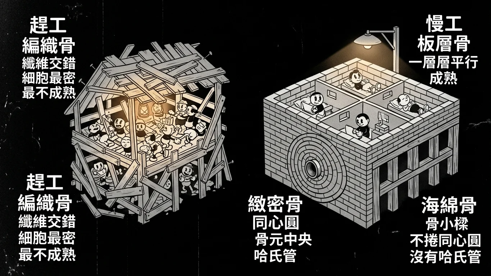
情境場景：趕工蓋的臨時工寮，和後來慢慢重砌的正式建築。
故事
骨頭在顯微鏡下只有兩種長相，差別在蓋的時候有沒有時間 。
趕工的版本叫編織骨 （woven bone）。膠原纖維隨便交錯、方向亂七八糟，細胞塞得又多又密。它出現在胚胎時期 、骨折後的第一時間 ——總之是「先把洞補起來再說」的場合。
慢工的版本叫板層骨 （lamellar bone）。膠原纖維一層一層平行排好，細胞規規矩矩住在自己的小房間裡。成人身上的骨頭幾乎都是這一種。
所以考題只要問「最雜亂、細胞密度最高」 ，答案永遠是編織骨；問「成熟」 ，答案就是板層骨。
但這裡有個容易搞混的地方。板層骨還分兩種住法：
・緻密骨 （compact bone）——把骨板捲成一圈一圈的同心圓，中間留一根管子走血管，這一整套叫骨元 （osteon），中間那根管子就是哈氏管 （Haversian canal）。海綿骨 （cancellous / trabecular bone）——排成一根根骨小樑，中間是骨髓，不捲同心圓，也就沒有哈氏管 。
「所以海綿骨也是成熟骨，但沒有哈氏管。」這句話就是 113 年那題的全部。
最後，住在骨頭裡的骨細胞 被水泥封在小室裡，那它怎麼跟外面交換東西？答案是半通道 （hemichannel）——連接蛋白只做半套，一端開向細胞外的骨基質，物質就從那裡進出。不要跟 gap junction 搞混 ：gap junction 是兩個半通道對接、連通兩個細胞 ；hemichannel 通的是細胞與外面的基質 。
骨型對照
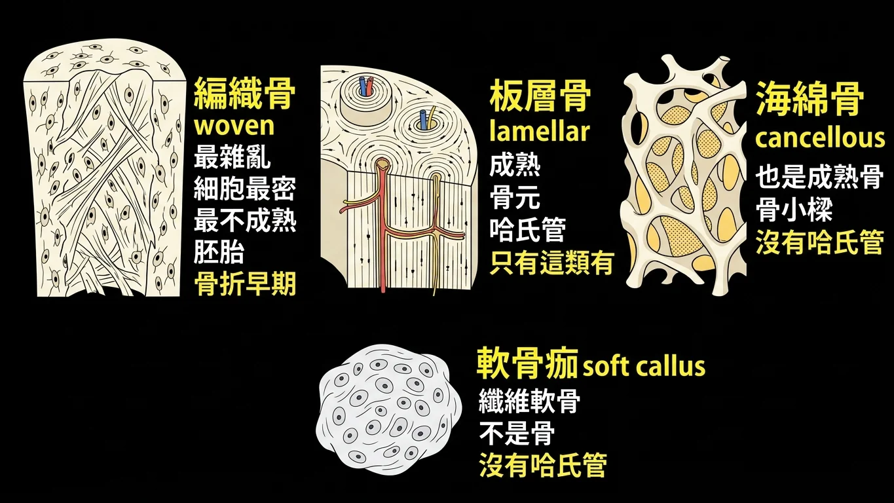
骨型對照：編織骨最雜亂、板層骨成熟，只有緻密骨的骨元有哈氏管。
回到現實
兩年的詳解剛好一句補一句：
詳解原文（112）:「這題是老師上課講義中給的考題的變形題，要選the most disorganized、has the highest cell density就要找最不成熟的骨骼型態，所以選(A) Woven bone。」
詳解原文（113）:「Haversian system只在成熟的Laminar bone中可見，Spongy/Trabecular/Cancellous bone也是成熟骨，但是並沒有 Haversian system。」
整理成一張表：
編織骨（woven bone） ：纖維排列最雜亂 、細胞密度最高 、最不成熟 。見於胚胎與骨折早期。
板層骨（lamellar / laminar bone） ：成熟骨。只有這一類才有哈氏系統 。
海綿骨（cancellous / spongy / trabecular bone） ：也是成熟骨 ，但排成骨小樑，沒有哈氏管 。
骨元（osteon）＝哈氏系統 ：同心圓骨板＋中央的哈氏管，是緻密骨 的基本單位。
113 年的選項 (C) soft callus（軟骨痂）是骨折癒合早期的纖維軟骨，連骨都還不是，更不會有哈氏管——這一個選項同時把第四章的內容也考進來了。
通道圖解
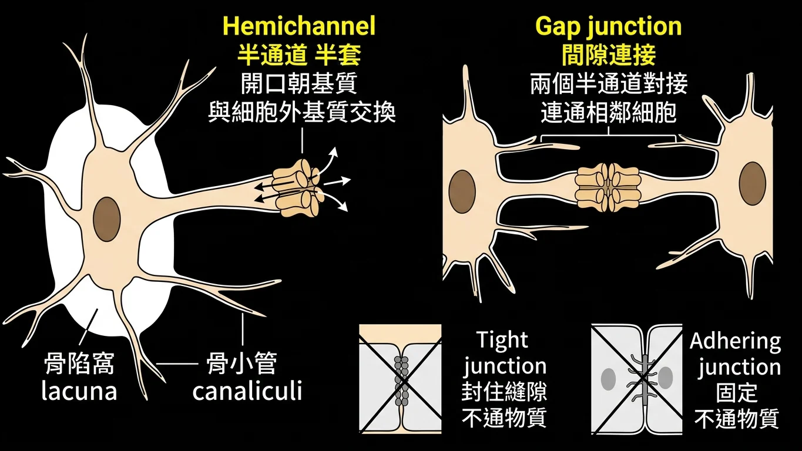
通道圖解：半通道通向基質，間隙連接通向另一個細胞。
半通道 vs 間隙連接
骨細胞被封在骨陷窩 （lacuna）裡，靠細長的突起穿過骨小管 （canaliculi）向外伸展。這些突起上有兩種東西，作用完全不同：
Hemichannel（半通道） ：由六個連接蛋白圍成的半套 通道，一端開口直接面向細胞外基質 。骨細胞與基質之間的物質交換走這條路 ——111 年第 76 題的答案。
Gap junction（間隙連接） ：兩個半通道頭對頭接起來 ，連通的是相鄰的兩個骨細胞 。它讓整個骨細胞網路可以互相通訊，但不是「與基質交換」。
另外兩個選項是連接類型的誘餌：tight junction（緊密連接） 負責封住細胞間隙、adhering junction（黏著連接） 負責固定，兩者都不通物質 。
111 年 期中考 第 76 題
Which structure can make osteocytes exchange material with the extracellular matrix?
(A) tight junction
(B) adhering junction
(C) hemichannel
(D) gap junction
答案與詳解
中文題目： 哪一種構造能讓骨細胞與細胞外基質進行物質交換？
(A) 緊密連接
(B) 黏著連接
(C) 半通道
(D) 間隙連接
答案：(C) hemichannel
詳解原文:「如左圖所示」
關鍵字是 extracellular matrix ：要與基質 交換就是半通道；gap junction 連的是另一個細胞 ，不是基質。(A)(B) 兩種連接不負責物質通過。
出處：施耀翔 骨骼組織學(ptt pg.42) ｜ BM111 BLOCK-8 期中考詳解.pdf 第 63 頁
112 年 期中考 第 76 題
From a microscopic perspective of bone tissue, which type of cell arrangement is the most disorganized and has the highest cell density?
(A) Woven bone
(B) Cancellous bone
(C) Osteon
(D) Laminar bone
答案與詳解
中文題目： 從骨組織的顯微觀點來看，哪一種細胞排列最雜亂 且細胞密度最高 ？
(A) 編織骨
(B) 海綿骨
(C) 骨元
(D) 板層骨
答案：A
詳解原文:「這題是老師上課講義中給的考題的變形題，要選the most disorganized、has the highest cell density就要找最不成熟的骨骼型態，所以選(A) Woven bone。」
「最雜亂＋細胞最多」＝最不成熟＝編織骨。 (B)(C)(D) 三個都屬成熟骨的範疇。
出處：施耀翔 骨骼組織學 (ppt pg.31-34) ｜ BM112_Block 8 期中考(含申覆內容與結果).pdf 第 97 頁
113 年 期中考 第 34 題
From a microscopic perspective of bone structure, which of the following contains Haversian canals?
(A) Woven bone
(B) Cancellous bone
(C) Soft callus
(D) Laminar bone
答案與詳解
中文題目： 從骨構造的顯微觀點來看，下列何者含有哈氏管？
(A) 編織骨
(B) 海綿骨
(C) 軟骨痂
(D) 板層骨
答案：(D)
詳解原文:「Haversian system只在成熟的Laminar bone中可見，Spongy/Trabecular/Cancellous bone也是成熟骨，但是並沒有 Haversian system。」
與 112 年第 76 題同一組選項、相反的問法：那年問「最不成熟」選編織骨，這年問「有哈氏管」選板層骨。(B) 海綿骨是這題的主要陷阱——它成熟，但沒有哈氏管。
出處：施耀翔 骨骼組織學 ppt pg. 18 & 27 ｜ BM113_Block8期中考詳解.pdf 第 44 頁
二、破骨細胞：從哪來、住哪裡、在哪工作
情境場景
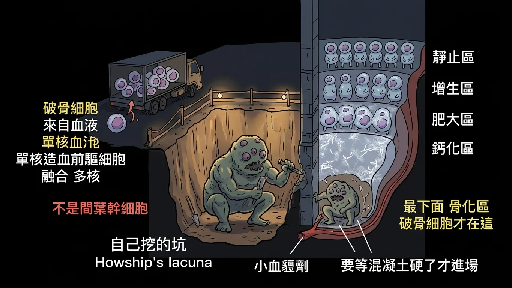
情境場景：拆除隊挖出自己的坑，而且要等混凝土硬了才進場。
故事
骨頭上的拆除隊 （破骨細胞）有三件事年年被考，全部都很好記，因為它們都跟「常識反著來」。
第一件：它的家世。 骨頭上其他細胞——成骨細胞、骨細胞、軟骨細胞——全都是間葉幹細胞 的後代。只有破骨細胞是外來的：它來自血液系統 ，是單核造血前驅細胞 融合而成。所以它才會有很多個核。看到「來自間葉幹細胞」就是錯的。
第二件：它的住所。 破骨細胞工作時會把自己底下的骨頭啃掉，於是在骨表面留下一個淺淺的凹坑，剛好把自己嵌在裡面。那個坑有名字，叫 Howship's lacuna （豪希普陷窩）。要在切片上認出破骨細胞，就找那個坑。
第三件：它在生長板的哪一區。 這一題連考兩年，還被申覆過一次，值得仔細看。
生長板由骨骺往骨幹依序分成幾區：靜止區 → 增生區 → 肥大區 → 鈣化區 → 骨化（吸收）區 。同學的直覺是「要先把軟骨拆掉，細胞才長得起來，所以破骨細胞應該在肥大鈣化區」。
老師的回答很精準：那一區的定義本身就不包含破骨細胞。 肥大區只有腫大的軟骨細胞和肝醣；鈣化區指的是軟骨細胞的基質 開始鈣化。要等到破骨細胞出現，那一區才被叫做「吸收區／骨化區」 ——換句話說，破骨細胞的出現就是 那一區的定義。
生長板分區
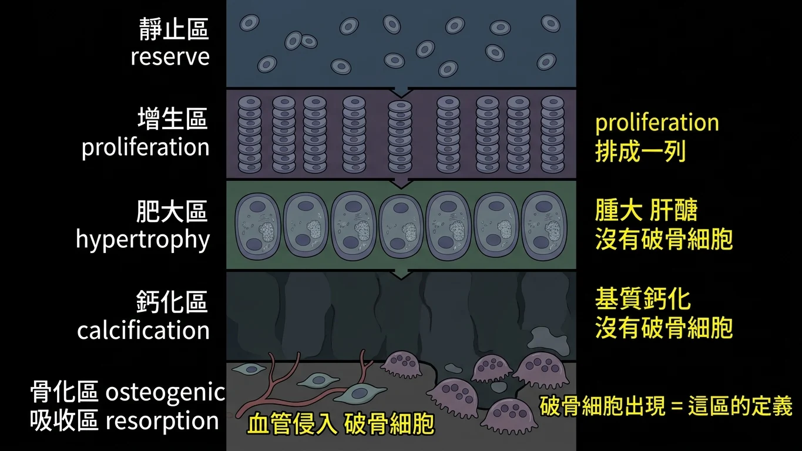
生長板分區：破骨細胞出現在最下方的骨化區，那也是該區的定義。
回到現實
兩年的詳解與申覆回覆合起來，把整個推理講完了：
詳解原文（112）:「(D) 由圖所示Osteocalst於Zone of calcified cartilage後始出現，本題亦為97-1醫師一階國考38題。」
申覆結果（112，維持原答案）:「在講義66頁有提到，Zone of hypertrophy僅有大量腫大的軟骨細胞及醣元(glycogen)；Zone of calcified則是指軟骨細胞的胞外基質開始鈣化的區域，跟Zone of resorption(或zone of osteogenic)定義有點不一樣，這區的定義是出現osteoclast才稱作resorption或osteogenic zone」
詳解原文（113）:「此題為國考題。在 osteogenic zone，小血管與骨前驅細胞會侵入已被鈣化的軟骨基質。Osteoclasts 會負責移除鈣化軟骨與初生骨組織，為新的骨形成鋪路。」
所以答案固定是 osteogenic zone（骨化區，又稱 zone of resorption 吸收區） ，理由有兩層：
① 時序上 ：破骨細胞是在鈣化之後 才進場的，跟著侵入的血管一起來。定義上 ：有破骨細胞出現，那一區才叫吸收區／骨化區。所以這是一個循環為真 的答案。
另外三個選項——靜止區、增生區、肥大鈣化區——都在破骨細胞抵達之前，那裡只有軟骨細胞。
111 年 期中考 第 77 題
Which statement is correct about osteoclasts?
(A) Can be found in Howship's lacunae
(B) Single nucleus
(C) Flatten shape of the nucleus
(D) Developing from mesenchymal stem cells
答案與詳解
中文題目： 關於破骨細胞的敘述，何者正確 ？
(A) 可在豪希普陷窩中發現。
(B) 單核。
(C) 細胞核呈扁平狀。
(D) 由間葉幹細胞發育而來。
答案：(A) Can be found in Howship's lacunae
詳解原文:「(B) 錯，是多核 (C) 錯，不是flatten (D) 錯，是mononuclear hemopoietic progenitor cells」
三個錯項各打破一個特徵：破骨細胞是多核的 、核不扁平 、來源是單核造血前驅細胞 而非間葉幹細胞。而它工作時自己挖出的凹坑，就是豪希普陷窩。
出處：施耀翔 骨骼組織學 ｜ BM111 BLOCK-8 期中考詳解.pdf 第 63 頁
112 年 期中考 第 78 題 ｜ 申覆後維持原答案
Osteoclasts are most commonly found in which region?
(A) Zone of cell proliferation in the epiphyseal plate
(B) Zone of hypertrophy and calcification in the epiphyseal plate
(C) Zone of reserve cartilage in the epiphyseal plate
(D) Osteogenic zone in the epiphyseal plate
答案與詳解
中文題目： 破骨細胞最常在哪一區被發現？
(A) 生長板的細胞增生區
(B) 生長板的肥大與鈣化區
(C) 生長板的靜止軟骨區
(D) 生長板的骨化區
答案：D（申覆後維持原答案）
詳解原文:「(D) 由圖所示Osteocalst於Zone of calcified cartilage後始出現，本題亦為97-1醫師一階國考38題。」
申覆結果（維持原答案）:「這區的定義是出現osteoclast才稱作resorption或osteogenic zone，可以參考97年醫師國考的釋疑。」
申覆主張「要先蝕骨才能增生鈣化，所以破骨細胞在肥大鈣化區」。老師的反駁是定義層次 的：肥大區只有腫大的軟骨細胞與肝醣，鈣化區指的是基質 鈣化；破骨細胞一出現，那一區就改叫吸收區／骨化區了 。
出處：施耀翔 組織學 骨與軟骨 (ppt pg.66 .67) ｜ BM112_Block 8 期中考(含申覆內容與結果).pdf 第 99 頁
113 年 期中考 第 36 題
Osteoclasts are most commonly found in which region?
(A) Zone of cell proliferation in the epiphyseal plate
(B) Zone of hypertrophy and calcification in the epiphyseal plate
(C) Zone of reserve cartilage in the epiphyseal plate
(D) Osteogenic zone in the epiphyseal plate
答案與詳解
中文題目： 破骨細胞最常在哪一區被發現？
(A) 生長板的細胞增生區
(B) 生長板的肥大與鈣化區
(C) 生長板的靜止軟骨區
(D) 生長板的骨化區
答案：(D)
詳解原文:「此題為國考題。在 osteogenic zone，小血管與骨前驅細胞會侵入已被鈣化的軟骨基質。Osteoclasts 會負責移除鈣化軟骨與初生骨組織，為新的骨形成鋪路。」
與 112 年第 78 題四個選項一字不差 ，連答案代號都一樣。這一題兩年都出現，是本科最穩定的送分題。
出處：施耀翔 骨骼組織學 ppt pg.66-67 ｜ BM113_Block8期中考詳解.pdf 第 46 頁
三、長骨怎麼長：兩個骨化中心
情境場景
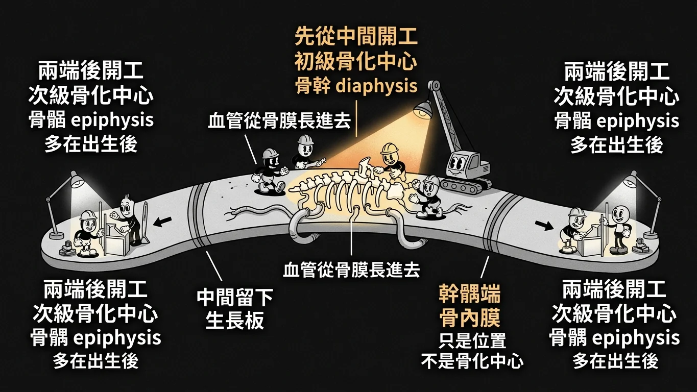
情境場景：先從中間開工，之後才在兩端各開一個分基地。
故事
這是本科考最多次的一題——三年考了四次 ，而且四次的選項一模一樣：diaphysis、epiphysis、metaphysis、endosteum。
它問的其實只有一件事：長骨的施工是從哪裡開始的？
把長骨想成一條要蓋的高架橋。整條橋一開始是一根軟骨模型 。工程隊來的時候，先在正中央開工 ——那裡是骨幹 （diaphysis），血管從骨膜長進去，形成初級骨化中心 （primary ossification center）。骨化從中央往兩端推。
過了一段時間（多半是出生後 ），兩端的骨骺 （epiphysis）也各自被血管找上，於是各開一個次級骨化中心 （secondary ossification center）。
兩邊往中間夾，最後只在中間留下一層軟骨——那就是生長板 ，你能長高全靠它。
記法只有一句：中間先開工、兩端後開工。
「那 metaphysis 跟 endosteum 呢？」兩個都不是骨化中心。 幹骺端是生長板旁邊那一段、骨內膜是骨髓腔的內襯，兩者都只是位置名稱 ，題目拿它們來湊數。
骨化順序
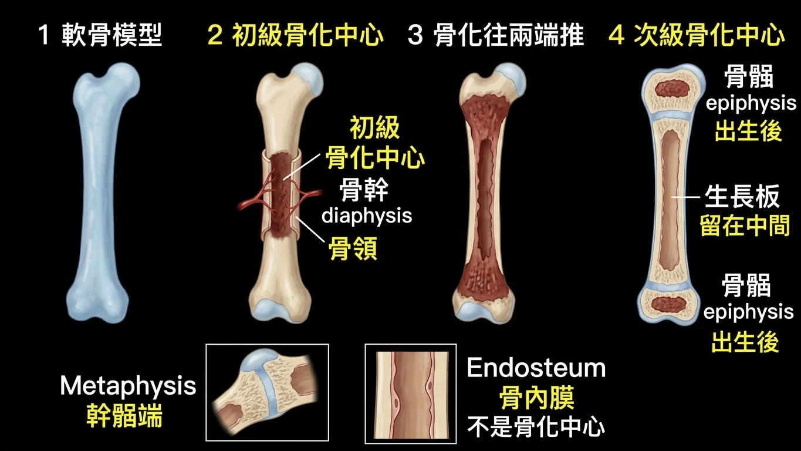
骨化順序：初級中心在骨幹、次級中心在骨骺，中間留下生長板。
回到現實
初級骨化中心（primary）→ 骨幹（diaphysis）
詳解原文（113 第 39 題）:「依照Endochondral ossification圖示所示，primary ossification center 位於diaphysis」
次級骨化中心（secondary）→ 骨骺（epiphysis） 111、112、113 三年都考同一句，答案都是 epiphysis 。111 與 112 的原卷詳解欄留空 ，只給答案與出處，可見這在老師眼裡是純記憶題。
另外兩個干擾選項：
・Metaphysis（幹骺端） ：生長板與骨幹之間那一段。它是骨軟骨瘤 與很多病灶的好發處，但不是骨化中心 。Endosteum（骨內膜） ：襯在骨髓腔內側的一層薄膜，含有骨前驅細胞，但同樣不是骨化中心 。
跨科提醒：113 年第 39 題（初級）與第 35 題（次級）出現在同一份考卷 ，兩題只差一個字。作答時先圈出 primary／secondary 再選 ，這是最容易因為手快而丟分的地方。
111 年 期中考 第 78 題
The secondary ossification center of long bone is localized in________.
(A) diaphysis
(B) epiphysis
(C) metaphysis
(D) endosteum
答案與詳解
中文題目： 長骨的次級 骨化中心位於＿＿＿＿。
(A) 骨幹
(B) 骨骺
(C) 幹骺端
(D) 骨內膜
答案：(B) epiphysis
原卷詳解欄留空 ，只給了答案與出處（ppt pg.64）。次級骨化中心在兩端的骨骺 ，多在出生後才出現。
出處：施耀翔 骨骼組織學(ppt pg.64) ｜ BM111 BLOCK-8 期中考詳解.pdf 第 64 頁
112 年 期中考 第 77 題
In the process of endochondral ossification of long bones, where is the secondary ossification center located?
(A) Diaphysis
(B) Epiphysis
(C) Metaphysis
(D) Endosteum
答案與詳解
中文題目： 在長骨的軟骨內骨化過程中，次級 骨化中心位於何處？
(A) 骨幹
(B) 骨骺
(C) 幹骺端
(D) 骨內膜
答案：B
原卷詳解欄留空 。與 111 年第 78 題是同一題，只把句型從填空改成問句。
出處：施耀翔 骨骼組織學 (ppt pg.64) ｜ BM112_Block 8 期中考(含申覆內容與結果).pdf 第 98 頁
113 年 期中考 第 35 題
In the process of endochondral ossification of long bones, where is the secondary ossification center located?
(A) Diaphysis
(B) Epiphysis
(C) Metaphysis
(D) Endosteum
答案與詳解
中文題目： 在長骨的軟骨內骨化過程中，次級 骨化中心位於何處？
(A) 骨幹
(B) 骨骺
(C) 幹骺端
(D) 骨內膜
答案：(B)
原卷詳解欄留空 ，只給了答案與出處（ppt pg.63）。與 112 年第 77 題逐字相同 。
出處：施耀翔 骨骼組織學 ppt pg.63 ｜ BM113_Block8期中考詳解.pdf 第 45 頁
113 年 期中考 第 39 題
Where is the primary ossification center located during endochondral ossification of a long bone?
(A) Diaphysis
(B) Epiphysis
(C) Metaphysis
(D) Endosteum
答案與詳解
中文題目： 長骨的軟骨內骨化過程中，初級 骨化中心位於何處？
(A) 骨幹
(B) 骨骺
(C) 幹骺端
(D) 骨內膜
答案：(A)
詳解原文:「依照Endochondral ossification圖示所示，primary ossification center 位於diaphysis」
與同一份考卷的第 35 題只差 primary／secondary 一個字，答案卻相反。 這是全科最容易看漏的一組。
出處：施耀翔 骨骼組織學 ppt pg 64 ｜ BM113_Block8期中考詳解.pdf 第 49 頁
四、骨折怎麼癒合：兩種骨痂
情境場景
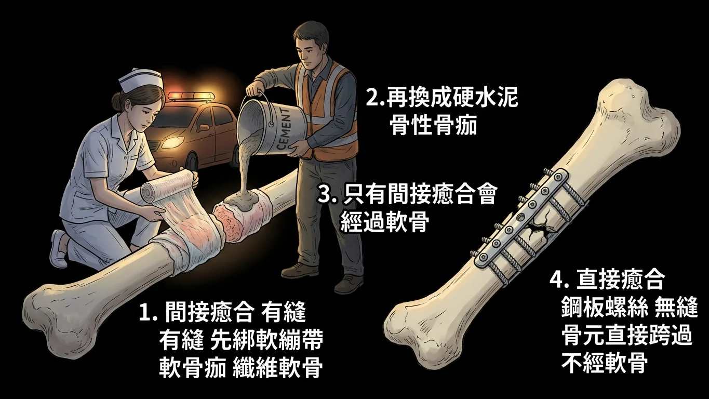
情境場景：先綁一層軟的臨時繃帶，再換成硬的水泥。
故事
骨頭斷了以後怎麼接回去，有兩條路。
直接癒合 （direct / primary bone healing）：兩個斷端被鋼板螺絲壓得死死的、完全沒有縫隙。這時候骨元可以直接跨過斷面重新鑽通，不需要經過任何軟骨階段 。這條路在自然狀況下幾乎不會發生，通常是手術做出來的。
間接癒合 （indirect / secondary bone healing）：兩個斷端有一點微動、有縫。身體的做法是先在外面綁一層臨時繃帶 ——由纖維軟骨 構成的軟骨痂 （soft callus），把斷端先穩住；接著這層軟骨走軟骨內骨化 ，被換成骨性骨痂 （bony callus / hard callus）；最後再慢慢重塑成正常形狀。
「所以骨折癒合會用到軟骨。」
「只有間接癒合會。 」這就是 113 年那題的答案：四個選項裡，膜內骨化不經軟骨、骨元發育不經軟骨、直接癒合不經軟骨，只有間接癒合會經過纖維軟骨 。
而 112 年考的是同一條路的另一端：X 光片上看到骨性骨痂 ，代表這個人最近骨折過 ，而且正在間接癒合的路上。
癒合流程
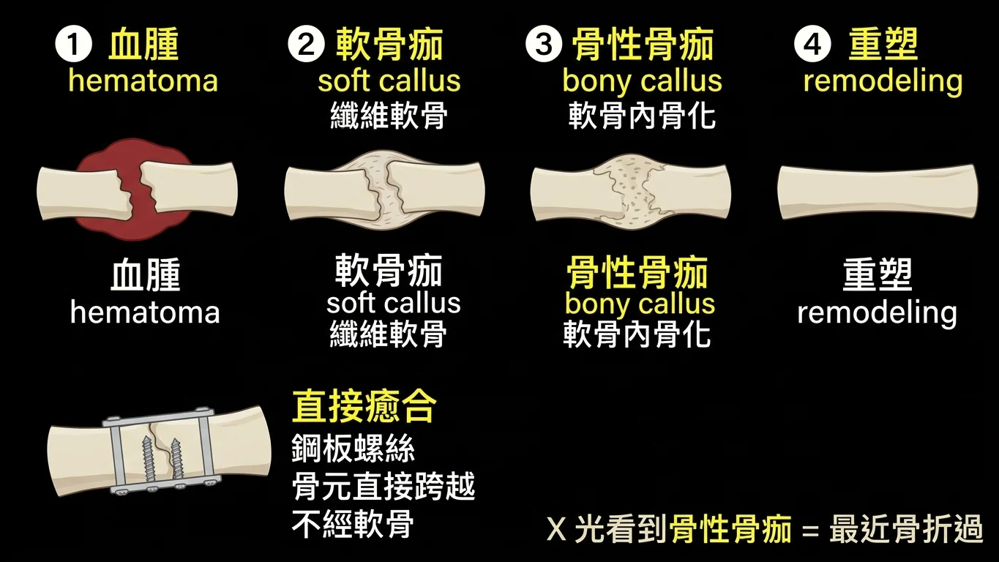
癒合流程：血腫、軟骨痂、骨痂、重塑，只有間接癒合經過軟骨。
回到現實
詳解原文（112）:「骨折後進行次級癒合(secondary bony healing)時，過程中涉及到在斷面處形成骨性骨痂(Bony callus)，藉此銜接後續的軟骨內骨化(endochondral ossification)。」
詳解原文（113）:「這題是國考題 (A) Intramembranous ossification和cartilage無關，Endochondral ossification才有 (B) (C) 也和cartilage無關 (D) 形成soft callus時就是fibrocartilage」
間接癒合的順序 ：血腫 → 軟骨痂（soft callus，纖維軟骨） → 骨性骨痂（bony callus） → 重塑。
四個選項為什麼只有一個對：
・(A) 膜內骨化 ：直接在膜上成骨，整個過程沒有軟骨 。骨元的發育 ：緻密骨內部的重塑，發生在既有的骨組織上，不經軟骨 。直接癒合 ：斷端無縫、骨元直接跨越，不經軟骨 。間接癒合 ：軟骨痂就是纖維軟骨 ——正確。
跨章提醒：第一章 113 年第 34 題的干擾選項 soft callus 就是這裡的軟骨痂。它連骨都不是，當然沒有哈氏管。同一份考卷用同一個詞，在兩題裡當兩種角色。
112 年 期中考 第 79 題
In an X-ray examination of an emergency patient, what structure would indicate that the patient might have suffered multiple fractures recently?
(A) Bony collar
(B) Growth plate fusion
(C) Bony callus
(D) Thinning of compact bone
答案與詳解
中文題目： 在一位急診病人的 X 光檢查中，哪一種構造會提示這位病人最近可能發生過多處骨折 ？
(A) 骨領
(B) 生長板癒合
(C) 骨性骨痂
(D) 緻密骨變薄
答案：C
詳解原文:「骨折後進行次級癒合(secondary bony healing)時，過程中涉及到在斷面處形成骨性骨痂(Bony callus)，藉此銜接後續的軟骨內骨化(endochondral ossification)。」
另外三個都是別的東西：骨領 是胚胎時期骨幹周圍最早形成的那圈骨；生長板癒合 代表已經停止長高；緻密骨變薄 是骨質疏鬆的表現。只有骨痂代表「最近斷過」。
出處：施耀翔 骨骼組織學(ppt pg.87) ｜ BM112_Block 8 期中考(含申覆內容與結果).pdf 第 101 頁
113 年 期中考 第 37 題
Which of the following involves the participation of cartilage?
(A) Intramembranous ossification
(B) Development of osteons
(C) Direct bone healing
(D) Indirect bone healing
答案與詳解
中文題目： 下列何者的過程中有軟骨參與 ？
(A) 膜內骨化
(B) 骨元的發育
(C) 直接骨癒合
(D) 間接骨癒合
答案：(D)
詳解原文:「這題是國考題 (A) Intramembranous ossification和cartilage無關，Endochondral ossification才有 (B) (C) 也和cartilage無關 (D) 形成soft callus時就是fibrocartilage」
判準只有一個：過程中有沒有出現「先做軟骨、再換成骨」這一步 。只有間接癒合會先做出纖維軟骨性的軟骨痂。
出處：施耀翔 骨骼組織學 ppt pg 58, 64, 74, 86, 87 ｜ BM113_Block8期中考詳解.pdf 第 47 頁
五、軟骨三兄弟與那條膠原分界線
情境場景
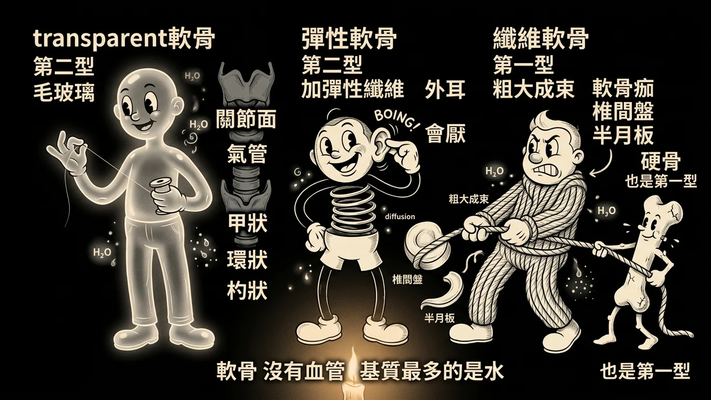
情境場景：三種軟骨用不同的纖維、走不同的路。
故事
軟骨有三兄弟，各自用不同的材料。
老大：透明軟骨 （hyaline cartilage）。基質均勻得像毛玻璃，膠原纖維是第二型 ，而且細得看不見。關節面、肋軟骨、氣管、生長板，還有喉部的甲狀軟骨、環狀軟骨、杓狀軟骨 都是它。
老二：彈性軟骨 （elastic cartilage）。在第二型膠原之外，額外塞了一大把彈性纖維 ，所以可以折彎再彈回來。它待在外耳、外耳道壁、耳咽管、會厭 ——全部是「要能折又要回彈」的地方。
老三：纖維軟骨 （fibrocartilage）。它的膠原是第一型 ，粗大成束、抗拉。椎間盤、半月板、恥骨聯合，還有骨折癒合時的軟骨痂 ，都是它。
而硬骨 用的也是第一型 。所以整組膠原題只要記兩條：
軟骨（透明、彈性）＝第二型；纖維軟骨與硬骨＝第一型。
還有兩件常被考的事。第一，軟骨沒有血管 ——它靠基質擴散取得養分，這也是軟骨受傷難癒合的原因。第二，軟骨基質裡佔比最高的其實是水 ，不是膠原；讓它留住水的是蛋白聚糖，例如硫酸軟骨素 與聚集蛋白聚糖 。
軟骨對照
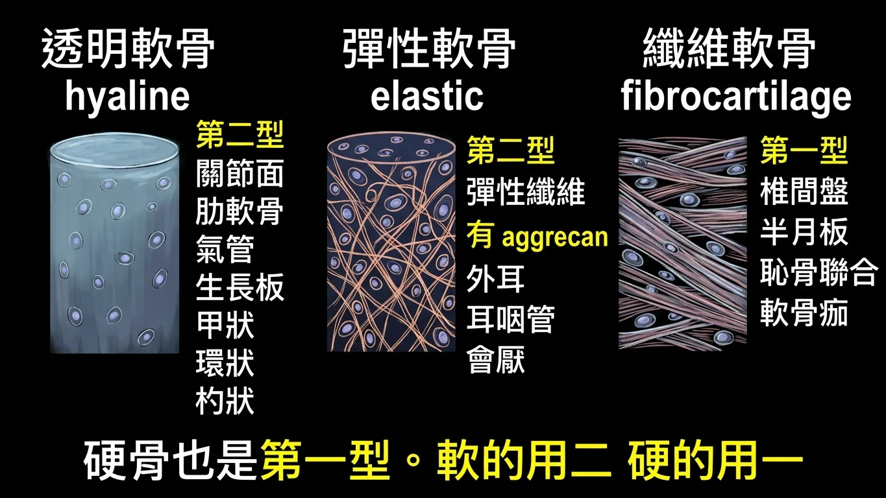
軟骨對照：三種軟骨的纖維、位置與膠原型別。
回到現實
111 年第 79 題的詳解一次把四個選項的事實交代完，是本章最值錢的一段：
詳解原文:「(A) 彈性軟骨(elastic cartilage)，有彈性纖維(elastic fiber) 和蛋白聚糖(aggrecan) protein (B) 透明軟骨(hyaline cartilage)中的膠原纖維，主要為第二型 (C) 纖維軟骨(fibrocartilage)中的膠原纖維，主要為第一型 (D) 三種軟骨的胞外間質(extracellular matrix)的組成中，皆以水分所占比例為最高」
四條可以直接拿去判對錯：
① 彈性軟骨「有」aggrecan ——說它沒有就是錯的。透明軟骨的膠原＝第二型。 纖維軟骨的膠原＝第一型 （不是第二型）。三種軟骨的基質裡，佔比最高的是「水」 ，不是膠原纖維。
而 112 年第 80 題與 113 年第 38 題把同一組事實拆成兩題單獨問：
・軟骨組織的細胞外基質中最多的膠原＝第二型 （112 年，答案 B）硬骨組織的細胞外基質中最多的膠原＝第一型 （113 年，答案 A）
兩題排在一起看就很好記：軟的用二、硬的用一。 而纖維軟骨雖然名字裡有「軟骨」，膠原卻跟硬骨同一型——因為它的工作是抗拉 ，不是抗壓。
軟硬分界
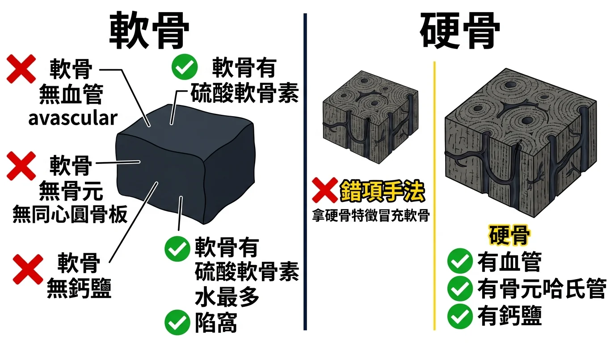
軟硬分界：軟骨無血管無骨元無鈣鹽，硬骨三者皆有。
透明軟骨的四個判準
「透明軟骨的特徵是什麼」這一題連考兩年，兩年的正確答案不同，但錯項的手法完全一樣——把硬骨的特徵拿來冒充軟骨 。
詳解原文（112）:「( B )cartilage is a avascular tissue. ( C )Haversian system 就是骨元，是骨頭才有的特徵 ( D )該敘述為骨頭的特徵，軟骨有的是chondrotin sulfate」
軟骨有的： 硫酸軟骨素（chondroitin sulfate）等蛋白聚糖、大量的水、第二型膠原、軟骨細胞住在陷窩 裡。
軟骨沒有的： 血管 （avascular）、同心圓骨板／哈氏系統 （那是緻密骨）、鈣鹽沉積 （那是骨）。
111 年的 (A) 則是位置陷阱：耳朵那一帶是彈性軟骨 ，不是透明軟骨。
詳解原文（111）:「(A) Elastic cartilage(彈性軟骨)比較會出現在耳朵附近的構造，例如external ear/ walls of the external acoustic meatus (外耳/外耳道壁)、auditory (Eustachian) tube(耳咽管)、epiglottis (會厭軟骨) of the larynx」
關於 111 年的 (D)「Developed from mesenchymal stem cell」：原詳解的理由是「軟骨細胞來自神經脊細胞」。這個說法只適用於顱顏面的軟骨 ——依同一份考卷胚胎學題目的官方詳解，脊索以前（頭部）由神經脊發育，以後（軀幹與四肢）來自旁軸中胚層 。所以四肢與軀幹的透明軟骨仍是間葉來源。這題的正解是 (B)，不受影響，但 (D) 的理由請當作「老師課堂上的說法」看待。
喉部軟骨
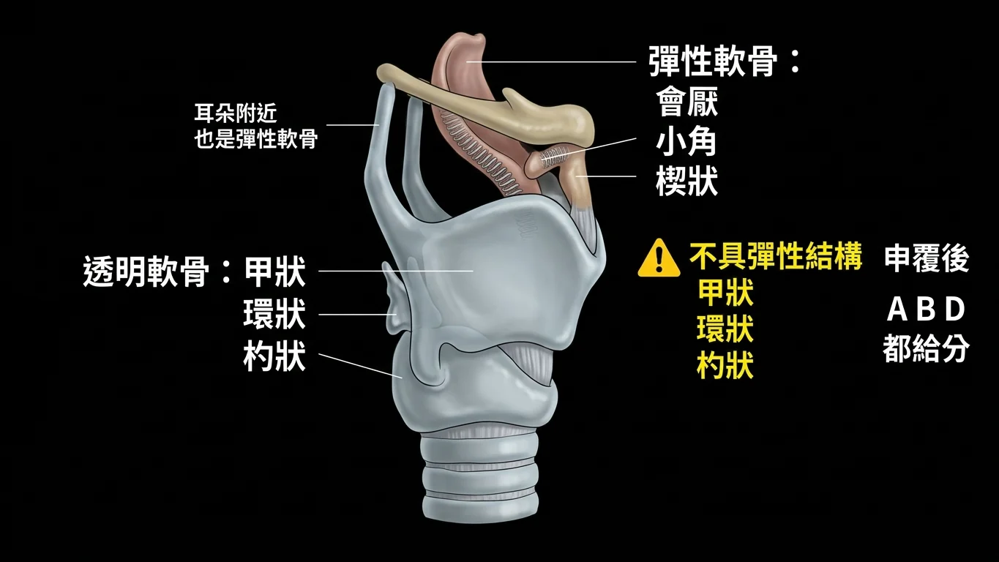
喉部軟骨：甲狀、環狀、杓狀是透明軟骨，會厭是彈性軟骨。
這題申覆改答案了
111 年第 80 題問「哪一個喉部軟骨不具 彈性軟骨的結構」，原答案只有 (A) Cricoid ，申覆後改為 (A)(B)(D) 都給分 。
申覆結果（老師回覆）:「本題確實為97年度牙醫國考題更改，根據醫學系國考用書 Histology : A text and atlas, by Michael H. Ross, and Wojciech Pawlina. Lippincott / Williams & Wilkins. 答案應為ABD無誤。」
正確的分類是：
透明軟骨： 甲狀軟骨（thyroid）、環狀軟骨（cricoid）、杓狀軟骨（arytenoid）彈性軟骨： 會厭軟骨（epiglottic）、小角軟骨（corniculate）、楔狀軟骨（cuneiform）
所以「不具彈性軟骨結構」的有三個，只有會厭 是彈性的。這一題直接背這兩行就好。
111 年 期中考 第 79 題
Which statement about cartilage is correct?
(A) Elastic cartilage containing elastic fiber without any aggrecan protein.
(B) The major type of collagen fiber is type II in hyaline cartilage.
(C) The major type of collagen fiber is type II in fibrocartilage.
(D) The major component of the extracellular matrix in all types of cartilage is collagen fiber.
答案與詳解
中文題目： 關於軟骨的敘述，何者正確 ？
(A) 彈性軟骨含有彈性纖維，但不含任何聚集蛋白聚糖。
(B) 透明軟骨中主要的膠原纖維是第二型。
(C) 纖維軟骨中主要的膠原纖維是第二型。
(D) 所有類型軟骨的細胞外基質中，主要成分都是膠原纖維。
答案：(B) The major type of collagen fiber is type II in hyaline cartilage.
詳解原文:「(A) 彈性軟骨(elastic cartilage)，有彈性纖維(elastic fiber) 和蛋白聚糖(aggrecan) protein (B) 透明軟骨(hyaline cartilage)中的膠原纖維，主要為第二型 (C) 纖維軟骨(fibrocartilage)中的膠原纖維，主要為第一型 (D) 三種軟骨的胞外間質(extracellular matrix)的組成中，皆以水分所占比例為最高」
三個錯項各改一處：彈性軟骨其實有 aggrecan 、纖維軟骨是第一型 、基質裡最多的是水不是膠原 。
出處：施耀翔 骨骼組織學(ppt pg.101,103) ｜ BM111 BLOCK-8 期中考詳解.pdf 第 65 頁
111 年 期中考 第 80 題 ｜ 申覆後 A → ABD
Which of the following laryngeal cartilages does not have the structure of elastic cartilage?
(A) Cricoid cartilage
(B) Thyroid cartilage
(C) Epiglottic cartilage
(D) Arytenoid cartilage
答案與詳解
中文題目： 下列哪一個喉部軟骨不具有 彈性軟骨的結構？
(A) 環狀軟骨
(B) 甲狀軟骨
(C) 會厭軟骨
(D) 杓狀軟骨
答案：申覆後 (A)(B)(D) 皆給分（原答案 (A)）
詳解原文:「Cricoid cartilage does not contain elastic cartilage. It is made up of hyaline cartilage. Furthermore, it's a complete and signet ring-shaped cartilage which is situated below the thyroid cartilage.」
申覆結果（A → ABD，老師回覆）:「本題確實為97年度牙醫國考題更改，根據醫學系國考用書 Histology : A text and atlas, by Michael H. Ross, and Wojciech Pawlina. 答案應為ABD無誤。」
甲狀、環狀、杓狀三個都是透明軟骨 ；喉部只有會厭 （以及小角、楔狀）是彈性軟骨。
出處：施耀翔 骨骼組織學 ｜ BM111 BLOCK-8 期中考詳解.pdf 第 66 頁
111 年 期中考 第 81 題
Which of the following is a characteristic of hyaline cartilage?
(A) Can be found in the ear
(B) Avascular
(C) Concentric lamellae
(D) Developed from mesenchymal stem cell
答案與詳解
中文題目： 下列何者是透明軟骨的特徵？
(A) 可在耳朵找到。
(B) 無血管。
(C) 同心圓骨板。
(D) 由間葉幹細胞發育而來。
答案：(B) Avascular
詳解原文:「(A) Elastic cartilage(彈性軟骨)比較會出現在耳朵附近的構造…(B) 軟骨是一種無血管組織…→選項正確 (C) Concentric lamellae 出現在cortical bone非hyaline cartilage (D) Hyaline cartilage主要由Chondrocyte組成，而Chondrocyte來自於neural crest cells(神經脊細胞)」
(A) 耳朵是彈性軟骨 ；(C) 同心圓骨板是緻密骨 的骨元。至於 (D)，原詳解以「軟骨細胞來自神經脊」為由判錯——該說法適用於顱顏面軟骨，軀幹與四肢的軟骨仍是旁軸中胚層來源 ，作答時記住正解是 (B) 即可。
出處：施耀翔 骨骼組織學(ptt pg.101,103) ｜ BM111 BLOCK-8 期中考詳解.pdf 第 67 頁
112 年 期中考 第 80 題
Which type of collagen fiber is most abundant in the extracellular matrix of cartilage tissue?
(A) Type I
(B) Type II
(C) Type III
(D) Type IV
答案與詳解
中文題目： 軟骨組織的細胞外基質中，含量最多的是哪一型膠原纖維？
(A) 第一型
(B) 第二型
(C) 第三型
(D) 第四型
答案：B
原卷詳解欄留空 。軟骨＝第二型 。與 113 年第 38 題（硬骨＝第一型）配成一組記。
出處：施耀翔 骨骼組織學(ppt pg.100) ｜ BM112_Block 8 期中考(含申覆內容與結果).pdf 第 101 頁
112 年 期中考 第 81 題
Which of the following is a characteristic of hyaline cartilage?
(A) It has a large amount of chondroitin sulfate.
(B) It contains a rich supply of microvessels.
(C) Cells form concentric circles in the Haversian system.
(D) The intercellular matrix contains calcium salt deposits.
答案與詳解
中文題目： 下列何者是透明軟骨的特徵？
(A) 含有大量硫酸軟骨素。
(B) 含有豐富的微血管。
(C) 細胞在哈氏系統中排成同心圓。
(D) 細胞間基質含有鈣鹽沉積。
答案：A
詳解原文:「( B )cartilage is a avascular tissue. ( C )Haversian system 就是骨元，是骨頭才有的特徵 ( D )該敘述為骨頭的特徵，軟骨有的是chondrotin sulfate」
與 111 年第 81 題同一個問法，這年三個錯項全部都是硬骨的特徵 ：有血管、有哈氏系統、有鈣鹽。
出處：施耀翔 骨骼組織學(ppt pg.18,93,100,) ｜ BM112_Block 8 期中考(含申覆內容與結果).pdf 第 102 頁
113 年 期中考 第 38 題
Which type of collagen fiber is most abundant in the extracellular matrix of hard bone tissue?
(A) Type I
(B) Type II
(C) Type III
(D) Type IV
答案與詳解
中文題目： 硬骨組織的細胞外基質中，含量最多的是哪一型膠原纖維？
(A) 第一型
(B) 第二型
(C) 第三型
(D) 第四型
答案：(A)
原卷詳解欄留空 ，只給了答案與出處（ppt pg 8）。與 112 年第 80 題是同一組選項、相反的問法：硬骨第一型、軟骨第二型。
出處：施耀翔 骨骼組織學 ppt pg 8 ｜ BM113_Block8期中考詳解.pdf 第 49 頁
八、歷年考題總複習
依年度由新到舊、同年依原始題號排列。共 18 題（111／112／113 期中考各 6 題）。紅框 ＝同一考點在兩個以上年度重複出現。
113 年 期中考 第 34 題
113 年 期中考 第 34 題 重複考點 ×2
同考點：112 第76題 — 骨的成熟度分類：編織骨最雜亂、只有板層骨有哈氏管
From a microscopic perspective of bone structure, which of the following contains Haversian canals?
(A) Woven bone (B) Cancellous bone (C) Soft callus (D) Laminar bone 答案與詳解
中文題目： 從骨構造的顯微觀點來看，下列何者含有哈氏管？
(A) 編織骨
(B) 海綿骨
(C) 軟骨痂
(D) 板層骨
答案：(D)
只有板層骨有哈氏系統；海綿骨雖成熟但沒有。 ｜ BM113_Block8期中考詳解 第 44 頁
113 年 期中考 第 35 題 ｜ 來源答案欄 重複考點 ×4
同考點：111 第78題、112 第77題、113 第39題 — 初級與次級骨化中心的位置：次級在骨骺、初級在骨幹
In the process of endochondral ossification of long bones, where is the secondary ossification center located?
(A) Diaphysis (B) Epiphysis (C) Metaphysis (D) Endosteum 答案與詳解
中文題目： 在長骨的軟骨內骨化過程中，次級 骨化中心位於何處？
(A) 骨幹
(B) 骨骺
(C) 幹骺端
(D) 骨內膜
答案：(B)
與 112 第 77 題逐字相同，次級骨化中心在骨骺。 ｜ BM113_Block8期中考詳解 第 45 頁
113 年 期中考 第 36 題 重複考點 ×2
同考點：112 第78題 — 破骨細胞最常出現在生長板的哪一區
Osteoclasts are most commonly found in which region?
(A) Zone of cell proliferation in the epiphyseal plate (B) Zone of hypertrophy and calcification in the epiphyseal plate (C) Zone of reserve cartilage in the epiphyseal plate (D) Osteogenic zone in the epiphyseal plate 答案與詳解
中文題目： 破骨細胞最常在哪一區被發現？
(A) 生長板的細胞增生區
(B) 生長板的肥大與鈣化區
(C) 生長板的靜止軟骨區
(D) 生長板的骨化區
答案：(D)
與 112 第 78 題四個選項一字不差，答案同樣是骨化區。 ｜ BM113_Block8期中考詳解 第 46 頁
113 年 期中考 第 37 題 重複考點 ×2
同考點：112 第79題 — 骨折癒合：間接癒合先形成纖維軟骨性軟骨痂再變骨痂
Which of the following involves the participation of cartilage?
(A) Intramembranous ossification (B) Development of osteons (C) Direct bone healing (D) Indirect bone healing 答案與詳解
中文題目： 下列何者的過程中有軟骨參與 ？
(A) 膜內骨化
(B) 骨元的發育
(C) 直接骨癒合
(D) 間接骨癒合
答案：(D)
只有間接癒合會經過軟骨——軟骨痂就是纖維軟骨。 ｜ BM113_Block8期中考詳解 第 47 頁
113 年 期中考 第 38 題 ｜ 來源答案欄 重複考點 ×3
同考點：111 第79題、112 第80題 — 膠原蛋白型別：軟骨第二型、硬骨第一型、纖維軟骨第一型
Which type of collagen fiber is most abundant in the extracellular matrix of hard bone tissue?
(A) Type I (B) Type II (C) Type III (D) Type IV 答案與詳解
中文題目： 硬骨組織的細胞外基質中，含量最多的是哪一型膠原纖維？
(A) 第一型
(B) 第二型
(C) 第三型
(D) 第四型
答案：(A)
硬骨的細胞外基質以第一型膠原最多，與軟骨的第二型配成一組。 ｜ BM113_Block8期中考詳解 第 49 頁
113 年 期中考 第 39 題 重複考點 ×4
同考點：111 第78題、112 第77題、113 第35題 — 初級與次級骨化中心的位置：次級在骨骺、初級在骨幹
Where is the primary ossification center located during endochondral ossification of a long bone?
(A) Diaphysis (B) Epiphysis (C) Metaphysis (D) Endosteum 答案與詳解
中文題目： 長骨的軟骨內骨化過程中，初級 骨化中心位於何處？
(A) 骨幹
(B) 骨骺
(C) 幹骺端
(D) 骨內膜
答案：(A)
初級骨化中心在骨幹；與同卷第 35 題只差一個字，答案卻相反。 ｜ BM113_Block8期中考詳解 第 49 頁
112 年 期中考 第 76 題
112 年 期中考 第 76 題 重複考點 ×2
同考點：113 第34題 — 骨的成熟度分類：編織骨最雜亂、只有板層骨有哈氏管
From a microscopic perspective of bone tissue, which type of cell arrangement is the most disorganized and has the highest cell density?
(A) Woven bone (B) Cancellous bone (C) Osteon (D) Laminar bone 答案與詳解
中文題目： 從骨組織的顯微觀點來看，哪一種細胞排列最雜亂 且細胞密度最高 ？
(A) 編織骨
(B) 海綿骨
(C) 骨元
(D) 板層骨
答案：A
最雜亂加細胞最多就是最不成熟，答案是編織骨。 ｜ BM112_Block 8 期中考(含申覆內容與結果) 第 97 頁
112 年 期中考 第 77 題 ｜ 來源答案欄 重複考點 ×4
同考點：111 第78題、113 第35題、113 第39題 — 初級與次級骨化中心的位置：次級在骨骺、初級在骨幹
In the process of endochondral ossification of long bones, where is the secondary ossification center located?
(A) Diaphysis (B) Epiphysis (C) Metaphysis (D) Endosteum 答案與詳解
中文題目： 在長骨的軟骨內骨化過程中，次級 骨化中心位於何處？
(A) 骨幹
(B) 骨骺
(C) 幹骺端
(D) 骨內膜
答案：B
與 111 第 78 題同一題，只把填空改成問句，答案仍是骨骺。 ｜ BM112_Block 8 期中考(含申覆內容與結果) 第 98 頁
112 年 期中考 第 78 題 重複考點 ×2
同考點：113 第36題 — 破骨細胞最常出現在生長板的哪一區
Osteoclasts are most commonly found in which region?
(A) Zone of cell proliferation in the epiphyseal plate (B) Zone of hypertrophy and calcification in the epiphyseal plate (C) Zone of reserve cartilage in the epiphyseal plate (D) Osteogenic zone in the epiphyseal plate 答案與詳解
中文題目： 破骨細胞最常在哪一區被發現？
(A) 生長板的細胞增生區
(B) 生長板的肥大與鈣化區
(C) 生長板的靜止軟骨區
(D) 生長板的骨化區
答案：D（申覆後維持原答案）
有破骨細胞出現，那一區才叫吸收區；申覆維持原答案。 ｜ BM112_Block 8 期中考(含申覆內容與結果) 第 99 頁
112 年 期中考 第 79 題 重複考點 ×2
同考點：113 第37題 — 骨折癒合：間接癒合先形成纖維軟骨性軟骨痂再變骨痂
In an X-ray examination of an emergency patient, what structure would indicate that the patient might have suffered multiple fractures recently?
(A) Bony collar (B) Growth plate fusion (C) Bony callus (D) Thinning of compact bone 答案與詳解
中文題目： 在一位急診病人的 X 光檢查中，哪一種構造會提示這位病人最近可能發生過多處骨折 ？
(A) 骨領
(B) 生長板癒合
(C) 骨性骨痂
(D) 緻密骨變薄
答案：C
X 光上的骨痂代表最近骨折過；骨領是胚胎期、緻密骨變薄是骨鬆。 ｜ BM112_Block 8 期中考(含申覆內容與結果) 第 101 頁
112 年 期中考 第 80 題 ｜ 來源答案欄 重複考點 ×3
同考點：111 第79題、113 第38題 — 膠原蛋白型別：軟骨第二型、硬骨第一型、纖維軟骨第一型
Which type of collagen fiber is most abundant in the extracellular matrix of cartilage tissue?
(A) Type I (B) Type II (C) Type III (D) Type IV 答案與詳解
中文題目： 軟骨組織的細胞外基質中，含量最多的是哪一型膠原纖維？
(A) 第一型
(B) 第二型
(C) 第三型
(D) 第四型
答案：B
軟骨的細胞外基質以第二型膠原最多。 ｜ BM112_Block 8 期中考(含申覆內容與結果) 第 101 頁
112 年 期中考 第 81 題 重複考點 ×2
同考點：111 第81題 — 透明軟骨的特徵：無血管、含硫酸軟骨素、沒有骨元構造
Which of the following is a characteristic of hyaline cartilage?
(A) It has a large amount of chondroitin sulfate. (B) It contains a rich supply of microvessels. (C) Cells form concentric circles in the Haversian system. (D) The intercellular matrix contains calcium salt deposits. 答案與詳解
中文題目： 下列何者是透明軟骨的特徵？
(A) 含有大量硫酸軟骨素。
(B) 含有豐富的微血管。
(C) 細胞在哈氏系統中排成同心圓。
(D) 細胞間基質含有鈣鹽沉積。
答案：A
三個錯項全是硬骨的特徵：有血管、有哈氏系統、有鈣鹽。 ｜ BM112_Block 8 期中考(含申覆內容與結果) 第 102 頁
111 年 期中考 第 76 題
111 年 期中考 第 76 題
Which structure can make osteocytes exchange material with the extracellular matrix?
(A) tight junction (B) adhering junction (C) hemichannel (D) gap junction 答案與詳解
中文題目： 哪一種構造能讓骨細胞與細胞外基質進行物質交換？
(A) 緊密連接
(B) 黏著連接
(C) 半通道
(D) 間隙連接
答案：(C) hemichannel
要與「基質」交換就是半通道；gap junction 連的是另一個細胞。 ｜ BM111 BLOCK-8 期中考詳解 第 63 頁
111 年 期中考 第 77 題
Which statement is correct about osteoclasts?
(A) Can be found in Howship's lacunae (B) Single nucleus (C) Flatten shape of the nucleus (D) Developing from mesenchymal stem cells 答案與詳解
中文題目： 關於破骨細胞的敘述，何者正確 ？
(A) 可在豪希普陷窩中發現。
(B) 單核。
(C) 細胞核呈扁平狀。
(D) 由間葉幹細胞發育而來。
答案：(A) Can be found in Howship's lacunae
破骨細胞多核、核不扁平、來自造血前驅細胞，住在自己啃出的豪希普陷窩。 ｜ BM111 BLOCK-8 期中考詳解 第 63 頁
111 年 期中考 第 78 題 ｜ 來源答案欄 重複考點 ×4
同考點：112 第77題、113 第35題、113 第39題 — 初級與次級骨化中心的位置：次級在骨骺、初級在骨幹
The secondary ossification center of long bone is localized in________.
(A) diaphysis (B) epiphysis (C) metaphysis (D) endosteum 答案與詳解
中文題目： 長骨的次級 骨化中心位於＿＿＿＿。
(A) 骨幹
(B) 骨骺
(C) 幹骺端
(D) 骨內膜
答案：(B) epiphysis
次級骨化中心在骨骺；幹骺端與骨內膜都不是骨化中心。 ｜ BM111 BLOCK-8 期中考詳解 第 64 頁
111 年 期中考 第 79 題 重複考點 ×3
同考點：112 第80題、113 第38題 — 膠原蛋白型別：軟骨第二型、硬骨第一型、纖維軟骨第一型
Which statement about cartilage is correct?
(A) Elastic cartilage containing elastic fiber without any aggrecan protein. (B) The major type of collagen fiber is type II in hyaline cartilage. (C) The major type of collagen fiber is type II in fibrocartilage. (D) The major component of the extracellular matrix in all types of cartilage is collagen fiber. 答案與詳解
中文題目： 關於軟骨的敘述，何者正確 ？
(A) 彈性軟骨含有彈性纖維，但不含任何聚集蛋白聚糖。
(B) 透明軟骨中主要的膠原纖維是第二型。
(C) 纖維軟骨中主要的膠原纖維是第二型。
(D) 所有類型軟骨的細胞外基質中，主要成分都是膠原纖維。
答案：(B) The major type of collagen fiber is type II in hyaline cartilage.
彈性軟骨有 aggrecan、纖維軟骨是第一型、基質裡最多的是水。 ｜ BM111 BLOCK-8 期中考詳解 第 65 頁
111 年 期中考 第 80 題
Which of the following laryngeal cartilages does not have the structure of elastic cartilage?
(A) Cricoid cartilage (B) Thyroid cartilage (C) Epiglottic cartilage (D) Arytenoid cartilage 答案與詳解
中文題目： 下列哪一個喉部軟骨不具有 彈性軟骨的結構？
(A) 環狀軟骨
(B) 甲狀軟骨
(C) 會厭軟骨
(D) 杓狀軟骨
答案：申覆後 (A)(B)(D) 皆給分（原答案 (A)）
甲狀、環狀、杓狀都是透明軟骨，喉部只有會厭是彈性；申覆後 A 改為 ABD。 ｜ BM111 BLOCK-8 期中考詳解 第 66 頁
111 年 期中考 第 81 題 重複考點 ×2
同考點：112 第81題 — 透明軟骨的特徵：無血管、含硫酸軟骨素、沒有骨元構造
Which of the following is a characteristic of hyaline cartilage?
(A) Can be found in the ear (B) Avascular (C) Concentric lamellae (D) Developed from mesenchymal stem cell 答案與詳解
中文題目： 下列何者是透明軟骨的特徵？
(A) 可在耳朵找到。
(B) 無血管。
(C) 同心圓骨板。
(D) 由間葉幹細胞發育而來。
答案：(B) Avascular
軟骨無血管；耳朵是彈性軟骨，同心圓骨板是緻密骨。 ｜ BM111 BLOCK-8 期中考詳解 第 67 頁
十八題、六個考點。最雜亂的是編織骨、有管子的是板層骨、中間先開工、只有間接癒合經過軟骨、軟的用二硬的用一。
留言板
看不懂、想補充、發現錯誤都歡迎留言；填個暱稱就能發。